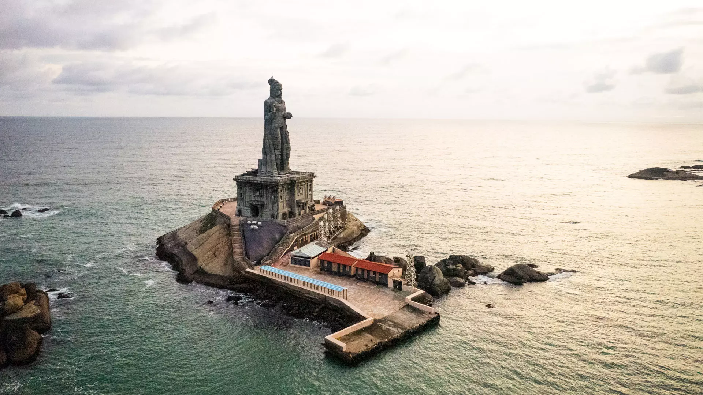
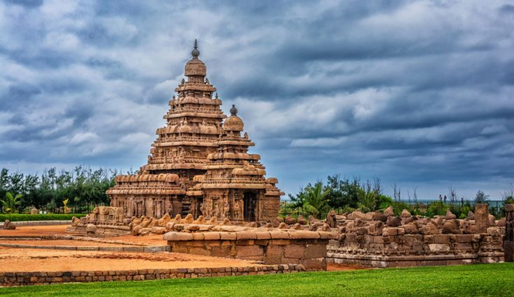
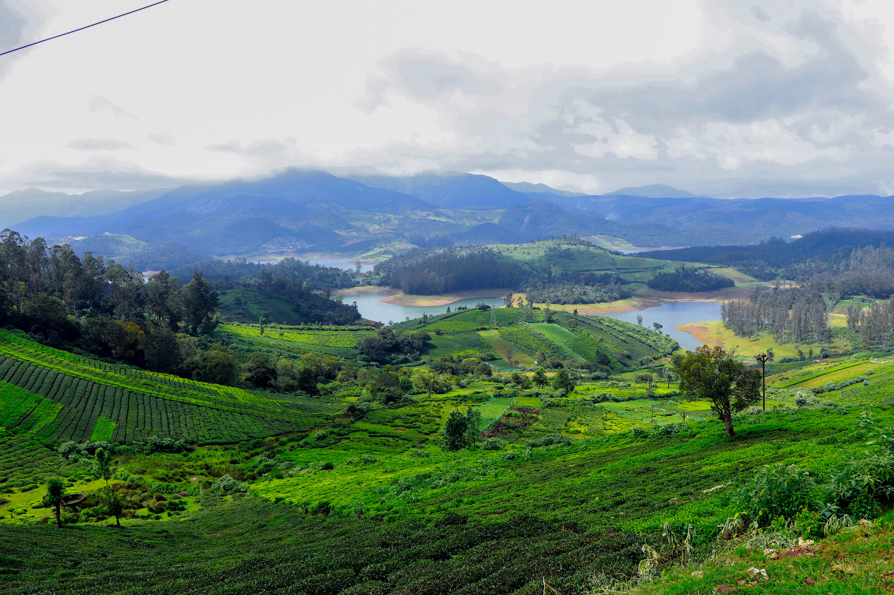
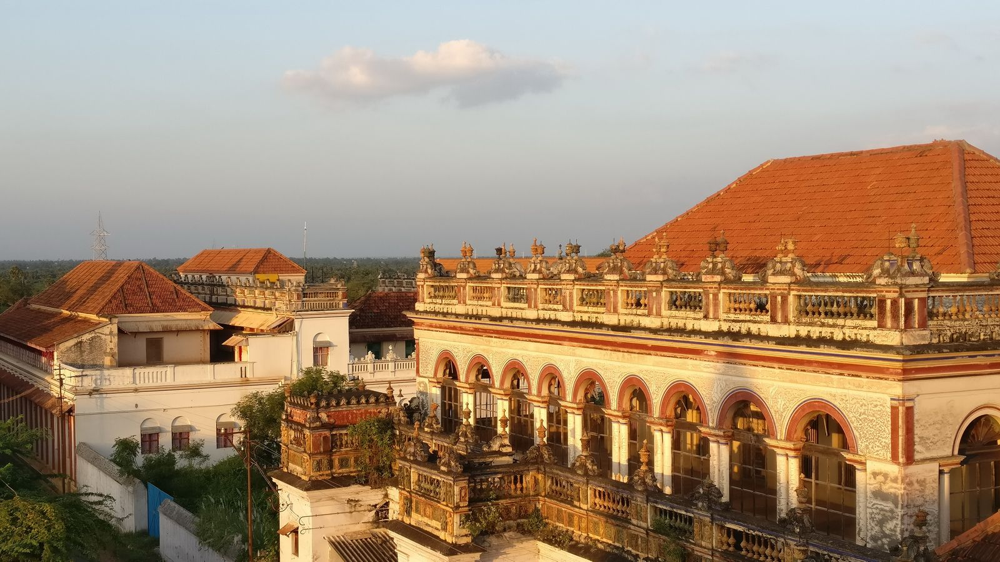
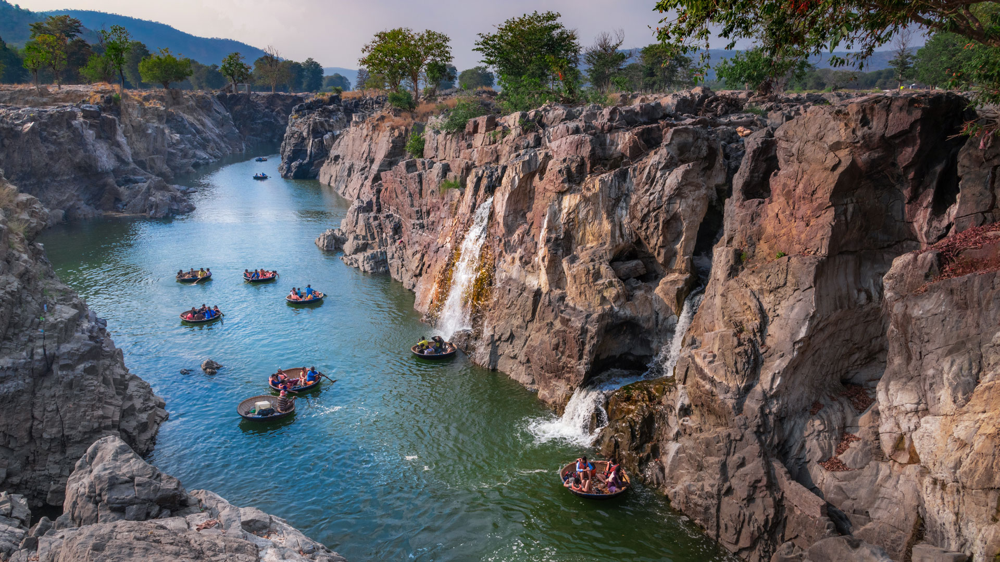

Travel tales of Tamil land — Experience the timeless greatness of monumental temples, mist-covered mountain valleys, sacred sanctuaries, and golden shores.
Honoring the timeless heritage, eternal language, and warm hospitality of Tamil Land
From centuries-old granite temples carved by ancient kings to misty hill stations and breathtaking coastal sunrises.

Standing proudly at 133 feet, this majestic granite monument honors the revered philosopher Thiruvalluvar at the confluence of three oceans.

An 8th-century structural marvel carved from granite overlooking the Bay of Bengal, representing the peak of Pallava dynastic craftsmanship.
A neo-Gothic cathedral built over the tomb of St. Thomas the Apostle, featuring soaring spires, pure white facades, and vibrant stained-glass artistry.

Nestled among eucalyptus forests, emerald tea estates, and cascading waterfalls, Ooty offers cool mountain breezes and scenic toy train rides.

Step into regal courtyards featuring Burmese teak pillars, Belgian mirrors, handmade Athangudi tiles, and world-renowned spicy Chettinad cuisine.

Known as the 'Niagara of India', where the Kaveri river cuts through carbonatite rocks with roaring cascades and traditional round coracle boat rides.
Everything you need to discover, plan, book, and enjoy Tamil Nadu safely and seamlessly.
Generate optimized, personalized travel routes and day-to-day itineraries based on your interests, budget, and travel days.
Try AI PlannerNavigate scenic roads, bypass congestions, and uncover verified hidden gems and food stops along your travel path.
Explore RoutesStay safe with 24/7 one-touch emergency SOS, verified tourist helpline access, and real-time safe zone locators.
Safety FeaturesKeep track of group travel expenses, split food and fuel bills automatically, and manage your holiday budget stress-free.
Track Expenses